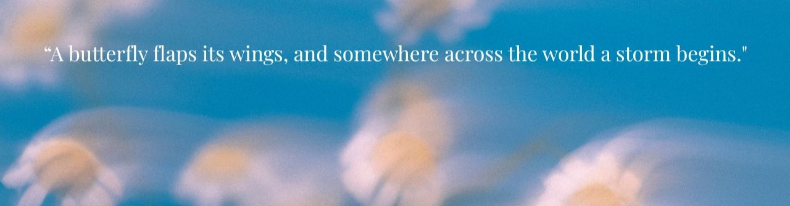

WILDFLOWER COLLECTIVE
HOME
BLOG
ABOUT
CONTACT
The Butterfly Effect
Stories about grief, healing, family, and awakening your soul.
All Stories
Post 05
Honey
Open
Post 11:11
The Tennis Ball
Open
Post 06
The Sound Of Silence
Open
Post 07
Normal
Open
Post 06
Momma.
Open
Post 07
Learning To Feel Safe
Open
Post 08
Finding Myself Again
Open
Post 09
Emotional Safety
Open
Post 10
Rebuilding Again
Open
Post 11
Kindness
Open
Post 12
Survival
Open
Post 13
No Longer Unapologetically Me
Open
Post 14
This Weight
Open
Post 15
Normal
Open
Post 16
The Light At The End Of The Tunnel
Open
Post 17
When Did We Become This
Open
Post 18
Mother's Day.
Open
Post 19
The Part People Didn't See
Open
Story
Healing
Open
Story
The One Who Never Left
Open
